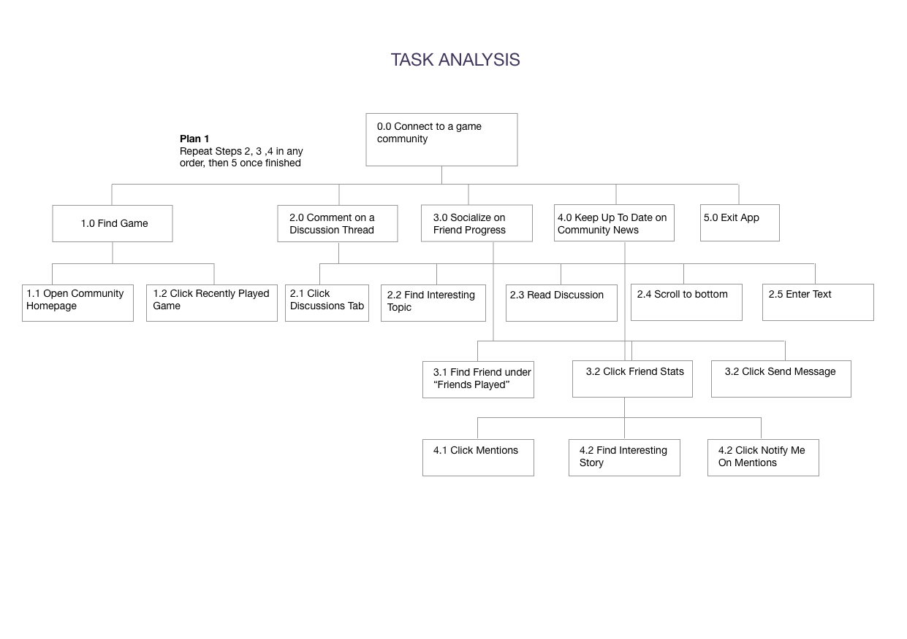
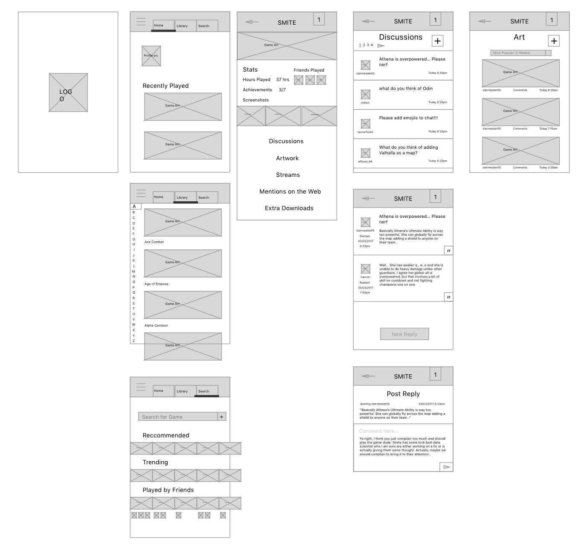
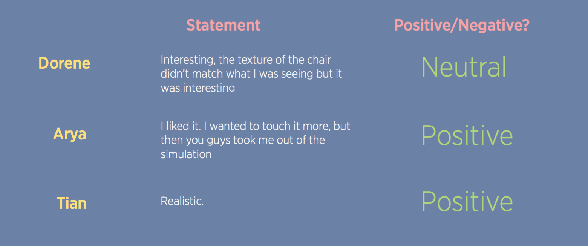

Duy Huynh
Product - User Experience - Engineer
Hey!
Welcome to my personal website. I am super excited that you have taken the time to take a peek into my world. Below, you will see a mix of professional and school side projects that showcase the breadth and depth of my skills.
I am a student studying Engineering so I can learn the skills I need to design, build, and implement awesome ideas that have far reaching impact. I am self-taught developer and I have work experience in multiple industries and roles. Feel free to reach out to me for any inquiries or opportunities you see fit.
Task Analysis, Personas, Wireframing, Prototyping, User Testing
Tools:Sketch, Actual Paper
Steamhubs is a work in progress steam mobile redesign and re-imagining of how players can interact with a game community.
With Benjie button, we have our primary persona who needs to fill in a social gap in his gaming. With SteamHubs, the aim is to delight users like Benjie with an engaging experience.
To fully flesh-out SteamHubs, an analysis of what kind of tasks users need to perform day to day was created to determine what to prioritize during interface design.
Wireframes were developed with the task analysis in mind. The idea is to have a central place to access features such as artwork, screenshots, and discussions from a central hub for each game.
Add prototype etc... here
Typography, Logo Design
Tools:Sketch
I was playing around with Sketch in February when I remembered I was tasked (I probably volunteered) with creating the team logo back in the Fall term. Clearly, it was not a high priority, then, but with engineering symposium lurking around the corner, I thought it would be a good idea to start designing something that represents what we’ve been working on for the past 6 months.
My fourth year design project is on the topic of container shipping. Specifically, optimizing scanner placements in ports on containers around the world that get sent to the United States. The idea is that goods are scanned before they enter the country, and prevent a situation not alike that of the Trojan Horse used to enter Troy by the Greeks. We call ourselves Team Equus which is latin for ‘horse’.
Even though it is a heavy research intensive project - images of the sea, and ships come to mind. When you think security - you think robust and stable.

The colour palette above exemplifies both imagery of the deep sea, as well as stability. The colour chosen was taken using the last colour and adding red and blue hues. I wanted a colour that also was not just muted, but have presence.
In pictures of older ships, you will see the names of ships printed on both simple, and complex fonts. For the logo, we wanted something that represented nautical fonts, but also feel modern. My choice of Heiti I feel reflects that.

Now onto the main design. Good logo design involves simplicity, and familiarity. In addition - it helps the viewer peak into what a company or work is about. When I first started thinking about my project, I knew ships was the first image I thought of. Could I make an outline of a ship that is easy to understand?
I started drawing outlines of ships on paper and drew something that I thought could represent a ship easily:

I put it into sketch using vector art while exaggerating features such as the sails. However something about it was off. Our project involves optimizing shipping containers.

With this idea in mind, I thought about how we could incorporate that into the logo. Add containers on the top of the ship? Show a map of earth with routes pointing everywhere? But then I remembered our story about our team name, and how it derives from latin for horse.

This was perfect. A horse on top of a ship is a great representation of the invasion of Troy. Except - it looks more like a unicorn. I decided to finetune the logo a bit more and add details such as hair and mane to make the image look more realistic and professional. This was based off of an outline I saw online.

There! A little vector arting there, a little asymetric bending here and hah! A double entendre on trojan horse, ships and a good representation of our fourth year design project. Our team logo.
User Research, User Testing, Control Systems
Tools:Props, Camera, Notes
Armo was a third year design project where we built the best haptic feedback device for your arm in virtual reality (VR). We thought it would be cool to build something that interfaces with VR, and thought that there was a need for more physical immersion. The device attaches to your elbow and sends a signal to a mechanical disc to stop your arm from moving.
To test our theory and practical application of our project - we had to do some user research.
The Wizard of Oz is a technique where the researcher simulates system responses from behind the scenes and the participant interacts with the system that appears to be real[1]. Participants or users in this case are led to believe there are interacting with a fully functioning prototype, however this is not the case. The goal is to allow a user to experience a proposed product before anything costly is built - in our case a physical prototype itself. For our case, it was extremely easy to set up. Users are so engrossed in virtual reality that they are unable to pay attention to their surroundings. Lastly, we wanted to have strong positive sentiment that haptic feedback did indeed add to the immersion
Participants were told that the google cardboard they were using had a surprise feature of offering full immersion. I asked them to try three different virtual simulations: Walking through an old Victorian room, riding a roller coaster and walking through a cave. Each of them will be utilizing the Mattel Viewmaster, which is a Google Cardboard certified device providing entry level virtual reality to the participants. While the participants go through the simulations, Garrett Hardy will be involved during the roller coaster and cave scenes as the system response (This is close to simulation, however I still directed Garrett as the User went through the product).
Each scenario had a different system response as depicted in the figure below:
After each virtual scenario, users were asked about how they felt about the experience. I recorded their statements and their overall feeling about each experience. Below is an example capture of the results:
Out of the three simulations, it looked like having a real chair for users to touch was a positive thing. For the roller coaster and cave, the overall sentiment was either neutral or negative. This can be attributed to poor use of props, and the fact that using a human as the system response would have raised some red flags within the user.
Out of the three simulations, it looked like having a real chair for users to touch was a positive thing. For the roller coaster and cave, the overall sentiment was either neutral or negative. This can be attributed to poor use of props, and the fact that using a human as the system response would have raised some red flags within the user.
For a user to feel fully immersed, we must ensure the correct amount of pressure is being provided to a users arm. Too much and the user will have dissonance between the object they are seeing and the feedback. In addition, it looks like users should be able to use the device as a natural extension of themselves, and not require much input besides using their arm.
Another interesting observation is that users do not know where they are in the physical space when moving around the virtual simulations. Potentially our prototype can have a sensor that tells the user where they are with respect to reality in order to help their orientation.
Lastly, users like to utilize their hands and fingers when they are looking around. This was out of the scope of the project, however this behaviour should be carefully noted.
The system response should basically be almost perfect similar to what the final prototype or product should function. Otherwise, users will sense the system response isn’t real and that takes them out of the immersion, as seen from the sentiment in the cave and roller coaster scenarios.
All in all - doing Wizard of Oz was an interesting way to validate haptic feedback in VR. For future projects, using Wizard of Oz is a great cost effective way of doing user testing before even having your first initial prototype.
User Controls, Navigation
Tools:Python, Kik Chat API, Heroku
Foosbot was a chatbot co-designed during my internship with Michael Shimokura (I miss you!) at Kik Messenger in the Fall of 2015.
At Kik, Foosball was one of the unifying games among interns and employees during work breaks. Sometimes, however, due to the varying working schedules of each individual, we found that we did not know who was free to play foosball without distracting other employees.
Chatbots are bots that you can chat with which will reply back with pre-determined responses based on your input, or if backed by an artificial intelligence engine, reply to contextually. As messaging is the main interface for communicating with employees in real time, it would make sense to reach out to the same people using the same medium. As a result Foosbot was born.
You can chat with a bot using typed responses, but what’s really unique about Kik when we first released chatbots was the ability to have the user click on pre-determined responses that send immediately. As interns, we were lucky enough to be the first to play and research how users can interact with chat before the feature fully released to the public.
Foosbot was our prototype for enabling employees to find other people who also wanted to play foosball without distracting others.
We thought about what was important for a Foosball chatbot and finding people. In our initial brainstorming, we thought 2v2 was the most fun match up type, so for the initial prototype we designed around getting 2v2 match up going. A queuing system needed to be built, along with a leaderboard to gamify our bot for the extra incentive to make players get better.
We thought having words as pre determined buttons took too much space and was not a good interface for a queuing application. Instead, as young interns we thought using emojis conveying simple actions would be a much better and delightful idea.
A soccer ball or play button could indicate a start of the queue, or emoji happy faces could even represent a rating system on how well a user thought the game was going.
In the end we ended up with these emojis for our interface:
There are basically 3 different states a user can be in with respect to our emoji interface.
State 1: Queue or Check Leaderboard
State 2: Cancel Queue or Check Queue or Check Leaderboard
State 3: We Won or We Lost
A soccer ball allows you to enter the queue. Top allows a user to view the leaderboard. A question mark allows the user to determine who is in the queue. A cancel emoji indicates cancel.
Below is a sample of entering a queue and exiting the queue:

If the bot doesn’t recognize input, it responds with a confused emoji and gives the user pre determined emoji response in chat.
Finally the leaderboard is displayed above. We added a TrueSkill rating to encourage people to play with compete playfully with each other in the office.
Having a legend of emoji to action can help the user navigate our interface without needing to click the responses and seeing how the bot reacts. With our sample size of around 25 users, none have reported issues navigating or queuing for foosball and have continued to compete to become the best Kik Foosball player.

For our third year design project, we wanted to solve the issue of determining solar feasibility in your geographical area without needing to go through solar consultation companies. The solution was a simple IoT device that you place on your roof that records data for a week. We had a working prototype which fed real time data from the roof of Engineering 5 at Waterloo during our presentation. We used CouchDB, Python, and an Arduino to make this happen.

Zuisalive - An anagram for Visualize (Thanks Brent!). Built using d3.js, and JADE, I wanted to play around with graphing libraries to make business intelligence metrics beautiful. The data was randomly generated with a one time python script. In the future I am looking to have the graphs randomly generate every time later down the line when I free up some time.

We placed in the top 3 and won the Sandford Fleming Design award. We also became the banner image for the next Waterloo engineering competition from our amazing team synergy and photogenic smiles ;)

I wrote an inspirational blog post that garnered 10,000+ views and a 60% read through rate from one facebook share. It was extremely scary letting out this piece into the world, uncertain whether people would feel inspired. Many people reached out who went through similar ordeals and were grateful they were not alone. This was a catalyst in my increasing passion for helping other people, and grow even more as an individual.

We were tied for the best mark on the design of a cardboard bridge in a class of 87 engineering students. An all nighter was pulled in order to make this project work, and it was so worth it. Lifetime friendships were forged that night and we learned how to build strong cardboard bridges.